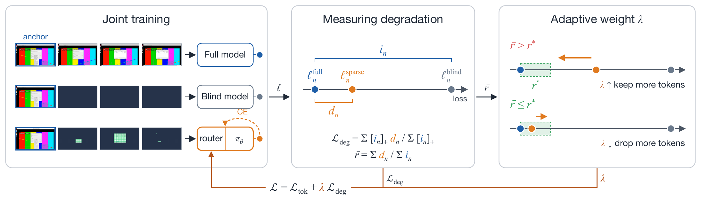

Previous frame
Next frame, as the model gets it
Learning to Keep Tokens That Matter
Computer-use agents turn every screenshot into thousands of visual tokens. VTR learns which ones the agent needs for its next action and drops the rest, matching full-resolution performance with 2.5 to 5.8× fewer tokens.
An agent keeps its past screenshots in context, and each one costs thousands of tokens. Watch both agents take the same steps.
Each bar is one screenshot. Token counts are the averages reported in the paper. VTR keeps every 10th screenshot in full as an anchor.
A simple rule keeps every region that changed. Turn on the video or the clock and see what that costs. VTR keeps only what the agent needs, here the file name it is typing.
An illustration of the behavior we see in the paper's examples. Dark regions are dropped, and outlined regions are kept.
Here is the previous frame and what happens next. Click the regions you would send to the model, then see what VTR kept.
VTR you
One model trained on desktop tasks and video games. It matches full resolution with far fewer tokens, runs cheaper and faster, and decides on its own how many tokens each input needs.
VTR matches the full-resolution model with 2.5× fewer tokens on OSWorld, 2.9× on CUA-World and 5.8× in video games.
Fewer tokens cut inference cost by up to 3.3× and prefill time by up to 2.9×, at the same score.
As more of a game screen moves, rules keep far more tokens. VTR keeps only a few more.
A small router decides which tokens enter the model, and we train it together with the model so that it drops as many tokens as it can without losing accuracy.
The router reads each image region across the current and previous screenshots, and keeps or drops its token. Kept tokens keep their positions on the screen.
A full model sees every token and a blind model sees only the anchors. Their losses show how much each action needs the history, and how much dropping tokens hurts.
A weight goes up when the model starts to lose accuracy and down when it does not, so the router learns how many tokens each input needs without a fixed budget.

@misc{aggarwal2026vtr,
title={Visual Token Routing: Learning to Keep Tokens That Matter},
author={Pranjal Aggarwal and Sean Welleck},
year={2026},
}